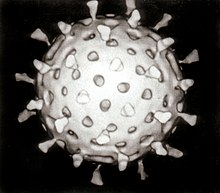

Вируси су најсићушнији микроорганизми, величине од неколико десетина до неколико стотина милимикрона. Видљиви су једино помоћу електронских микроскопа који повећавају више од 100.000 пута. Има их велики број врста, а разликују се по величини, структури и другим особинама
